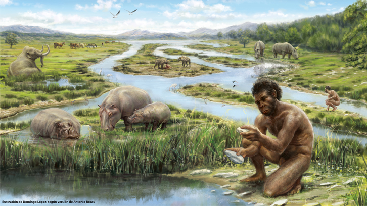

El periodo precámbrico da inicio a la era paleozoica en este periodo es donde los seres vivos del reino animalia comienzan aparecer, fueron las esponjas los primeros del reino animalia,
todo comenzó en los mares hace unos 570 millones de años tambien los arthopodos aparecen en esta epoca, por ahora no hay mucha información de este periodo.
Hace falta una explicación sobre como se generaron las condiciones para que los seres vivios existan, hay muchas teorias pero no se pueden comprobar,
segun un estudio de la universidad Brown se descubrio agua en los asteroides pero no explica toda el agua de la tierra pero contribuyó para formar las condiciones para la vida.
CÁMBRICO (545 - 490 Ma)
El periodo cámbrico fue un periodo de grandes cambios que dio muchos de los grupos de animales que conocemos, este periodo comenzó hace 541 millones de años,
llegaron los primeros superdepredadores como el anomalocaris y los primeros animales vertebrados como el haikouichthys, tambien caracteristicas anatomicas importantes como los ojos pero aun no habia ningun ser vivo en la tierra firme.
ORDOVÍCICO (490 - 445 Ma)
En el periodo ordovícico pasó la revolución bioerosiva del ordovícico, aumento de la cantidad y diversidad de los seres vivos,
aparecen los arrecifes de coral tambien los moluscos son más abundantes tambien aparecen nuevos grupos de organismos como los escorpiones marinos, los ortocono, los briozoos y etc.
se cree que algunos invertebrados como los escorpiones marinos salian del agua pero no se pueden considerar animales terrestres porque necesitaban el agua para llenar sus branquias.
SILÚRICO (445 - 415 Ma)
En el periodo silúrico las primeras plantas se desarrollaron en tierra firme junto con los miriápodos y los quelicerados.
los cephalaspis desarrollaron algunas características anatómicas que muchos animales actuales tienen como el sentido del tacto, uno de los primeros cerebros complejos y la memoria.
en esta epoca los arthopodos dominaban las aguas como los brontoscorpio.
DEVÓNICO (415 - 355 Ma)
En el periodo Devónico aparecen los primeros afibios como el Hynerpeton. Una parte de los artropodos se adadtaron a tierra firme pero redujeron su tamaño,
las plantas se convirtieron en árboles y formaron bosques,aún no había herbívoros terrestres por eso se extendieron.
los pezes carnívoros como el hyneria dominaban las aguas.
CARBONÍFERO (355 - 290 Ma)
En el periodo carbonífero gran parte de la tierra estaba cubierto por bosques pantanosos, había un 40% más de oxígeno que en la actualidad,
este ambiente provocó que los artrópodos crecieran de tamaño y depredadores como la megarachne y la meganeura dominaban en este periodo.
la arthropleura hacía una función parecida a las mariposas,ayudar a las plantas a crecer, los primeros reptiles aparecieron como el petrolacosaurus y los primeros protomamiferos como el ophiacodon.
PÉRMICO (290 - 250 Ma)
El periodo pérmico es el final de la era paleozoica dominaro los protomamiferos, son seres que dieron origen a los mamíferos, como el dimetrodon.
En un inicio el clima era más seco y frío, los arthopodos del carbonífero no pudieron adaptarse al clima y redujeron su tamaño.
Al final del periodo se extendio el desierto en Pangea y se extinguieron el 90% de las especies pero los animales más pequeños como el dicynodon sobrevivieron.
TRIÁSICO (250 - 200 Ma)
El periodo triásico es el inicio de la era Mesozoica el clima se recuperó del desierto del pérmico y la fauna tambien en el inicio los protomamiferos como los lystrosaurus dominaban y aparecieron los primeros cocodrilos
como los chasmatosaurus o proterosuchus. el euparkeria logró pararse en dos patas gracias a la estructura de la union del fémur y la pelvis estas caracteristicas y el euparkeria dieron origen a los dinosaurios.
En los océanos aparecen los reptiles marinos como los ictiosaurios tambien aparecen los primeros mamíferos como el megazostrodon
a finales del periodo aparecen los dinosaurios como el mussaurus y los pterosaurios.
JURÁSICO (200 - 145 Ma)
En el periodo jurásico el supercontinente Pangea comenzó a separarse el clima era seco y cálido en el inicio pero se transformó en un clima subtropical húmedo.
Aparecen las primeras ranas, aparecieron los dinosaurios de mayor tamaño como el allosaurio, se desarrollaron los reptiles marinos como el mosasaurio y aparecen las aves a partir de dinosaurios carnívoros bípedos.
CRETÁCICO (145 - 65 Ma)
El periodo cretácico es el final de la era Mesozoica el aumento de la temperatura llegó a su punto máximo.
aparecen las primeras tortugas, los tiburones reemplazarón a los ictiosaurios y aparecen depredadores como el tyrannosaurus rex, carnotaurus y el spinosaurus.
Al final del periodo pasó el evento de extinción masiva, sobrevivieron los animales de nenor tamaño, pero no se sabe ¿qué lo causo? hay una hipótesis que dice que fue un evento climático y otra hipótesis dice que fue el impacto de un meteorito.
TERCIARIO (65 - 1.64 Ma)
El periodo terciario es el comienzo de la era cenozoica se completó la separación de Pangea. En el inicio del periodo su clima era más frío y seco pero en la mitad del período comenzó la glaciación en los polos.
Los mamíferos evolucionaron a grandes herbívoros y carnívoros como el mastodonte y el smilodon en anteriores periodos eran animales pequeños,aves dominaban más,
la vida marina se recuperó aparecieron los mamíferos marinos como la ballena y aparecen los primeros simios.
CUATERNARIO (1.64 Ma - actualidad)
En el periodo cuaternario tenia patrones glaciares e interglaciares que llegaban a 4 a 5°c.
Predominaron los mamíferos de mayor tamaño como el mamut lanudo y apareció la humanidad.

ACTUALIDAD
En la actualidad los humanos dominan causando extinciones de especies. se crearon seres vivos híbridos como la abeja africanizada tambien seres vivos modificados,
animales domésticos afectados como las vacas, seres vivos adaptados para vivir en entornos urbanos, conflictos entre humanos y animales, animales con ADN de plantas como el caracol esmeralda
y especies invasoras.